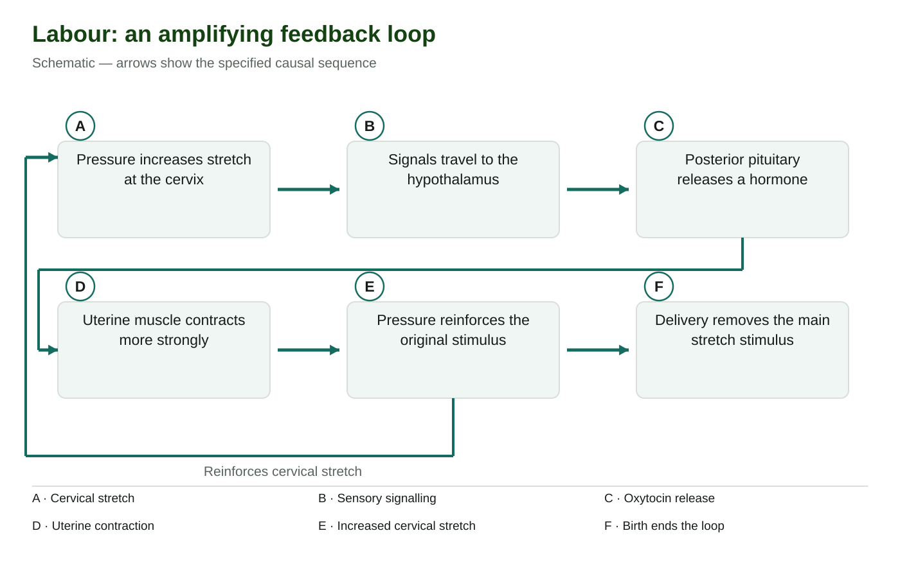

<section class="course-page" hidden="" id="lesson-09"><div class="p2-topic"><header class="page-header"><p class="eyebrow">Learn · Chapter 15</p><h1 data-canvas-edit-key="ch15-l09-title" data-canvas-helper-edit-key="ch15-l09-title">Labour and birth as positive feedback</h1><p class="lesson-question">How does a self-amplifying response help bring about birth?</p><div class="goal-strip"><div><p class="section-label">Learning goal</p><p data-canvas-edit-key="ch15-l09-goal" data-canvas-helper-edit-key="ch15-l09-goal">Trace cervical stretch, neural signalling and oxytocin, then distinguish the three stages of parturition.</p></div><div><p class="section-label">Before you begin</p><p data-canvas-edit-key="ch15-l09-prior" data-canvas-helper-edit-key="ch15-l09-prior">Positive feedback amplifies the initiating change. It needs an ending event or another limiting mechanism.</p></div></div><details class="page-guide"><summary><strong>How to complete this lesson</strong> Learn → worked example → practise → lesson check</summary><div class="guide-body"><ol><li>Read the explanation and its diagrams. Open a bold term when you need a definition.</li><li>Follow the worked example, then try both supported questions. Select <strong>Check answer</strong> for feedback.</li><li>Open the required check and select <strong>Start</strong>. Correct both selections to unlock writing.</li><li>Write each explanation and select its <strong>Save written response</strong> button. Editing saved writing makes it a draft again.</li><li>Select <strong>Submit and finish</strong> to complete the check. Find your records in <strong>All My Work</strong>.</li></ol><p><strong>Expected work:</strong> one completed lesson check. Supported practice, videos and textbook questions are optional. Saved writing is not automatically graded.</p></div></details><div class="textbook-band"><div><strong>Optional embedded reading</strong><p>Chapter 15 · printed pp. 524–525</p></div><p><a data-open-pdf="524" href="#textbook-library">Open p. 524</a> · <a data-open-pdf="525" href="#textbook-library">Open p. 525</a></p></div><p class="terms-line lesson-term-strip"><strong>Key terms:</strong> <button aria-haspopup="dialog" class="bio-term" data-term-id="ch15-word-parturition" type="button">parturition</button> · <button aria-haspopup="dialog" class="bio-term" data-term-id="ch15-word-cervical-dilation" type="button">cervical dilation</button> · <button aria-haspopup="dialog" class="bio-term" data-term-id="ch15-word-oxytocin" type="button">oxytocin</button> · <button aria-haspopup="dialog" class="bio-term" data-term-id="ch15-word-positive-feedback" type="button">positive feedback</button></p><details class="vocab-help lesson-vocabulary-help"><summary>Vocabulary help</summary><section aria-labelledby="lesson-09-anchor-words" class="lesson-words"><p class="section-label">Key terms</p><h2 id="lesson-09-anchor-words">Words for this lesson</h2><p>Use these definitions when you need help with a term.</p><dl><div><dt><button aria-haspopup="dialog" class="bio-term" data-term-id="ch15-word-parturition" type="button">parturition</button></dt><dd>The process of labour and birth.</dd></div><div><dt><button aria-haspopup="dialog" class="bio-term" data-term-id="ch15-word-cervical-dilation" type="button">cervical dilation</button></dt><dd>Widening of the cervix during labour.</dd></div><div><dt><button aria-haspopup="dialog" class="bio-term" data-term-id="ch15-word-oxytocin" type="button">oxytocin</button></dt><dd>A hormone made in the hypothalamus and released by the posterior pituitary that supports uterine contractions and milk ejection.</dd></div><div><dt><button aria-haspopup="dialog" class="bio-term" data-term-id="ch15-word-positive-feedback" type="button">positive feedback</button></dt><dd>A response that reinforces the initiating change.</dd></div></dl></section></details></header><div class="content-section" data-canvas-edit-key="ch15-l09-teaching-01" data-canvas-helper-edit-key="ch15-l09-teaching-01" id="ch15-l09-teaching-01"><h3>Follow the message from the cervix to the uterus</h3>
<p>Parturition means labour and birth. The cervix is the lower, narrow part of the uterus that opens into the vagina. During labour, uterine contractions and pressure from the baby can stretch this opening. To explain the response, keep three things separate: the change detected, the route carrying information and the tissue that responds.</p>
<p data-canvas-edit-key="ch15-l09-teaching-01-p1" data-canvas-helper-edit-key="ch15-l09-teaching-01-p1">Sensory receptors detect cervical stretch, and nerve impulses carry that information to the hypothalamus. <button aria-haspopup="dialog" class="bio-term" data-term-id="ch15-word-oxytocin" type="button">Oxytocin</button> is made in the hypothalamus and released into blood by the posterior pituitary. Blood carries it to uterine muscle, where it helps strengthen contractions. The sensory message travels through neurons; the hormone travels through blood.</p>
<p data-canvas-edit-key="ch15-l09-teaching-01-p2" data-canvas-helper-edit-key="ch15-l09-teaching-01-p2">This stretch–contraction circuit is a model of <button aria-haspopup="dialog" class="bio-term" data-term-id="ch15-word-positive-feedback" type="button">positive feedback</button>. Labour also involves other interacting signals, including locally acting prostaglandins that help promote contractions. The circuit explains an amplifying response during labour; it is not a complete explanation of how human labour first begins.</p>
<figure class="science-figure" data-figure-id="ch15-birth-feedback"><div class="figure-toolbar"><strong>Labour: an amplifying feedback loop</strong><button class="text-link" data-enlarge-figure="ch15-birth-feedback" type="button">View larger</button></div><figcaption>The first five features reinforce cervical stretch; birth removes the principal stimulus. Prostaglandins can also support contractions. Schematic — arrows show the specified causal sequence.</figcaption></figure>
<p>Trace A → B → C → D in the figure: cervical pressure, sensory signalling, pituitary hormone release and uterine contraction. Then follow E back toward A. That returning arrow matters: a stronger contraction can push the baby against the cervix and produce more stretch, renewing the signal. F marks the event that removes the main stretch stimulus.</p></div><div class="content-section" data-canvas-edit-key="ch15-l09-teaching-02" data-canvas-helper-edit-key="ch15-l09-teaching-02" id="ch15-l09-teaching-02"><h3>Decide what makes the feedback positive</h3>
<p data-canvas-edit-key="ch15-l09-teaching-02-p1" data-canvas-helper-edit-key="ch15-l09-teaching-02-p1">Start with the initiating change: cervical stretch. The response includes stronger contractions. Those contractions can increase the very stretch that initiated the signalling. Because response and starting change reinforce one another, the feedback is positive. “Positive” describes that relationship; it does not mean healthy, pleasant or beneficial.</p>
<p data-canvas-edit-key="ch15-l09-teaching-02-p2" data-canvas-helper-edit-key="ch15-l09-teaching-02-p2">Compare a negative-feedback response: if a rise in a hormone reduces further secretion of that hormone, the response opposes the rise. Here, increased stretch promotes a response that can produce still more stretch. Merely saying “a hormone is released” cannot tell you the feedback type; you must follow the response back to its effect on the starting change.</p>
<p data-canvas-edit-key="ch15-l09-teaching-02-p3" data-canvas-helper-edit-key="ch15-l09-teaching-02-p3">Delivery of the baby removes much of the cervical pressure that drives this particular loop. That interrupts its amplification. It does not mean every uterine contraction immediately stops: contraction continues during delivery of the placenta and afterward. An explanation should identify both what reinforces the loop and what limits it.</p></div><div class="content-section" data-canvas-edit-key="ch15-l09-teaching-03" data-canvas-helper-edit-key="ch15-l09-teaching-03" id="ch15-l09-teaching-03"><h3>Use the event to distinguish the three stages</h3>
<p data-canvas-edit-key="ch15-l09-teaching-03-p1" data-canvas-helper-edit-key="ch15-l09-teaching-03-p1">The stages describe changes in structures, so connect each name to its event. During <strong>dilation</strong>, the cervix thins and opens as labour progresses. During <strong>expulsion</strong>, the baby passes through the opened cervix and birth canal and is delivered. During the <strong>placental stage</strong>, the <button aria-haspopup="dialog" class="bio-term" data-term-id="ch15-word-placenta" type="button">placenta</button> separates from the uterine wall and is delivered with associated membranes.</p>
<p data-canvas-edit-key="ch15-l09-teaching-03-p2" data-canvas-helper-edit-key="ch15-l09-teaching-03-p2">For example, if the baby has been delivered but the placenta remains in the uterus, expulsion has finished and the placental stage is still to be completed. The baby and placenta are delivered in successive stages; delivery of one does not establish delivery of the other. These are birth events, long after <button aria-haspopup="dialog" class="bio-term" data-term-id="ch15-word-fertilization" type="button">fertilization</button>.</p>
<p>In the textbook's three-stage figure on printed p. 525, compare the cervix in A, the baby's position in B and the separating placenta in C. Classify the stage by the structure and event, not by memorizing a fixed duration. Stage lengths and the timing of membrane rupture vary.</p>
<p data-canvas-edit-key="ch15-l09-teaching-03-p3" data-canvas-helper-edit-key="ch15-l09-teaching-03-p3">Continued uterine contraction after birth helps reduce the uterus's size and limits bleeding where the placenta was attached. Placental delivery also changes hormone concentrations, linking birth with the increase in milk secretion examined next.</p></div><div class="worked-example" data-canvas-edit-key="ch15-l09-worked" data-canvas-helper-edit-key="ch15-l09-worked" id="ch15-l09-worked"><h3>Worked example</h3><h4>Explain the loop and its ending</h4>
<p><strong>Given:</strong> In a model of labour, cervical stretch is followed by sensory signalling, oxytocin release and stronger contractions. The stronger contractions push the baby more firmly against the cervix. After the baby is delivered, that pressure is greatly reduced. <strong>Question:</strong> Why is this positive feedback, and what changes when delivery occurs?</p>
<ol><li><strong>Identify the input:</strong> cervical stretch initiates the sensory signal. It is a physical change, not a hormone.</li><li><strong>Trace the routes:</strong> nerve impulses carry information to the hypothalamus; the posterior pituitary releases oxytocin into blood; uterine muscle responds with stronger contractions.</li><li><strong>Close the loop:</strong> the stated contractions increase pressure and stretch at the cervix. The response reinforces the input, so the feedback is positive.</li><li><strong>Apply the changed condition:</strong> delivery reduces the pressure driving this loop. Less initiating stretch limits its amplification; it does not prove that all uterine activity stops.</li></ol>
<p><strong>Check the explanation:</strong> “Oxytocin is involved” names a signal but leaves out the decisive relationship. A complete answer connects the contraction response back to increased stretch and identifies the removal of that stimulus.</p></div><section class="content-section guided-practice" data-canvas-edit-key="ch15-l09-guided" data-canvas-helper-edit-key="ch15-l09-guided" id="ch15-l09-guided"><h2>Practise with support</h2><h3>Apply the explanation</h3><p>Try both questions. Use the hint to revise your thinking after an incorrect answer.</p><div class="practice-question" data-guided-item="ch15-l09-guided-q1"><label for="ch15-l09-guided-q1">Which event is the response to oxytocin in the birth loop?</label><select id="ch15-l09-guided-q1"><option value="">Choose an answer</option><option value="Release of an ovarian follicle">Release of an ovarian follicle</option><option value="Stronger uterine contractions">Stronger uterine contractions</option><option value="Meiosis in the zygote">Meiosis in the zygote</option></select><div class="actions"><button data-guided-check="" type="button">Check answer</button></div><p aria-live="polite" data-revision-feedback="" role="status"></p></div><div class="practice-question" data-guided-item="ch15-l09-guided-q2"><label for="ch15-l09-guided-q2">Which event follows delivery of the baby in the three-stage model?</label><select id="ch15-l09-guided-q2"><option value="">Choose an answer</option><option value="Fertilization">Fertilization</option><option value="Blastocyst formation">Blastocyst formation</option><option value="Placental stage">Placental stage</option></select><div class="actions"><button data-guided-check="" type="button">Check answer</button></div><p aria-live="polite" data-revision-feedback="" role="status"></p></div></section><div class="stop-check"><p class="section-label">Stop and think</p><h2>Try this before opening the explanation</h2><p>Why is “positive means healthy” not a biological definition?</p><details><summary>Show the explanation</summary><p>Feedback is classified by whether the response reinforces or opposes a change, not by a value judgement.</p></details></div><aside class="video-companion"><div class="video-copy"><p class="eyebrow">Optional video support</p><h3>Labour and birth as positive feedback — video support</h3><p><strong>As you watch:</strong> Trace cervical stretch, neural signalling and oxytocin, then distinguish the three stages of parturition.</p><p class="resource-note">Optional video. Internet access is required. The explanation below covers the idea without the video.</p><a href="https://www.youtube.com/watch?v=heWOEkjutHc" rel="noopener noreferrer" target="_blank">Open on YouTube</a></div><div class="video-visual"><div class="video-stage" data-video-stage="heWOEkjutHc"><button data-play-video="heWOEkjutHc" type="button">Load video</button></div><div class="concept-summary"><h4>Read the explanation</h4><p>Stronger contractions can push the baby more firmly against the cervix, increasing stretch. That additional stretch promotes further signalling and oxytocin release. The response reinforces the initiating change instead of opposing it. This is why the loop is called positive feedback. The word positive does not mean “good.” It describes the relationship between response and stimulus. Compare negative feedback, in which a response reduces a deviation or decreases the signal that initiated it. Delivery removes much of the cervical-stretch stimulus from this particular loop. A feedback explanation is incomplete unless it identifies what ends or limits the amplification.</p></div></div></aside><details class="activity-disclosure"><summary>Open required check · Labour and birth as positive feedback</summary><section class="activity" data-check-id="ch15-check-09" data-required-check=""><h2>Explain what you have learned</h2><p class="required-note">This check counts toward chapter progress. Correct the 2 selections to unlock 2 written explanations. Saving writing records your response; it does not grade its accuracy.</p><div class="run-head"><div class="actions"><button data-start-check="" type="button">Start</button><button data-redo-check="" hidden="" type="button">Redo this check</button></div><span class="timer" data-check-timer="">Not started</span></div><p aria-live="polite" class="run-status" data-check-status=""></p><fieldset data-check-body="" disabled=""><legend class="sr-only">Required chapter check</legend><div class="check-question" data-check-question="ch15-l09-check-mc-1"><p class="eyebrow">Selection 1</p><h3 data-canvas-edit-key="ch15-l09-check-mc-1-prompt" data-canvas-helper-edit-key="ch15-l09-check-mc-1-prompt" id="ch15-l09-check-mc-1-prompt">What makes cervical stretch and contraction a positive-feedback loop?</h3><fieldset aria-labelledby="ch15-l09-check-mc-1-prompt"><label class="choice-row"><input data-check-choice="ch15-l09-check-mc-1" name="ch15-l09-check-mc-1" type="radio" value="The response can increase the stretch that initiated it"/><span>The response can increase the stretch that initiated it</span></label><label class="choice-row"><input data-check-choice="ch15-l09-check-mc-1" name="ch15-l09-check-mc-1" type="radio" value="The response eliminates all contractions immediately"/><span>The response eliminates all contractions immediately</span></label><label class="choice-row"><input data-check-choice="ch15-l09-check-mc-1" name="ch15-l09-check-mc-1" type="radio" value="The response is always beneficial"/><span>The response is always beneficial</span></label><label class="choice-row"><input data-check-choice="ch15-l09-check-mc-1" name="ch15-l09-check-mc-1" type="radio" value="Oxytocin travels through a nerve rather than blood"/><span>Oxytocin travels through a nerve rather than blood</span></label></fieldset><button data-check-answer="ch15-l09-check-mc-1" type="button">Check answer</button><p aria-live="polite" class="inline-feedback" data-feedback=""></p></div><div class="check-question" data-check-question="ch15-l09-check-mc-2"><p class="eyebrow">Selection 2</p><h3 data-canvas-edit-key="ch15-l09-check-mc-2-prompt" data-canvas-helper-edit-key="ch15-l09-check-mc-2-prompt" id="ch15-l09-check-mc-2-prompt">Which sequence correctly traces part of the birth control pathway?</h3><fieldset aria-labelledby="ch15-l09-check-mc-2-prompt"><label class="choice-row"><input data-check-choice="ch15-l09-check-mc-2" name="ch15-l09-check-mc-2" type="radio" value="Oxytocin → sperm formation → implantation → cervical stretch"/><span>Oxytocin → sperm formation → implantation → cervical stretch</span></label><label class="choice-row"><input data-check-choice="ch15-l09-check-mc-2" name="ch15-l09-check-mc-2" type="radio" value="Cervical stretch → sensory signalling → oxytocin release → uterine contraction"/><span>Cervical stretch → sensory signalling → oxytocin release → uterine contraction</span></label><label class="choice-row"><input data-check-choice="ch15-l09-check-mc-2" name="ch15-l09-check-mc-2" type="radio" value="Cervical stretch → progesterone destruction of the fetus → ovulation"/><span>Cervical stretch → progesterone destruction of the fetus → ovulation</span></label><label class="choice-row"><input data-check-choice="ch15-l09-check-mc-2" name="ch15-l09-check-mc-2" type="radio" value="Pituitary contraction → neural milk production → gastrulation"/><span>Pituitary contraction → neural milk production → gastrulation</span></label></fieldset><button data-check-answer="ch15-l09-check-mc-2" type="button">Check answer</button><p aria-live="polite" class="inline-feedback" data-feedback=""></p></div><p class="unlock-message" data-unlock-message="">Answer the selections correctly to unlock the writing.</p><fieldset data-writing-gate="" disabled=""><legend class="sr-only">Written explanations</legend><div class="writing-question" data-writing-question="ch15-l09-check-writing-1"><p class="eyebrow">Written explanation 1</p><label data-canvas-edit-key="ch15-l09-check-writing-1-prompt" data-canvas-helper-edit-key="ch15-l09-check-writing-1-prompt" for="ch15-l09-check-writing-1">Trace the positive-feedback loop involving cervical stretch and oxytocin. Explain what makes it positive.</label><textarea aria-describedby="ch15-l09-check-writing-1-status" data-check-writing="ch15-l09-check-writing-1" data-limit="3200" id="ch15-l09-check-writing-1" rows="6"></textarea><p class="writing-status">Maximum 3200 characters. Explain the biology in your own words.</p><button data-save-writing="ch15-l09-check-writing-1" type="button">Save written response</button><p aria-live="polite" class="writing-status" data-writing-status="" id="ch15-l09-check-writing-1-status"></p><details data-locked="true"><summary>Compare after saving your own response</summary><p>Cervical stretch sends sensory information to the hypothalamus, promoting oxytocin release from the posterior pituitary. Oxytocin strengthens uterine contractions, which increase stretch. The response reinforces the initiating change. Delivery reduces the main stretch stimulus.</p><div class="answer-criteria"><strong>Check your explanation for:</strong><ul><li>Identifies the relevant structures or quantities.</li><li>Explains the causal relationship or calculation, not just the final result.</li><li>Uses the stated evidence and avoids a stronger conclusion than it supports.</li></ul></div></details></div><div class="writing-question" data-writing-question="ch15-l09-check-writing-2"><p class="eyebrow">Written explanation 2</p><label data-canvas-edit-key="ch15-l09-check-writing-2-prompt" data-canvas-helper-edit-key="ch15-l09-check-writing-2-prompt" for="ch15-l09-check-writing-2">Name and distinguish the three stages of parturition.</label><textarea aria-describedby="ch15-l09-check-writing-2-status" data-check-writing="ch15-l09-check-writing-2" data-limit="3200" id="ch15-l09-check-writing-2" rows="6"></textarea><p class="writing-status">Maximum 3200 characters. Explain the biology in your own words.</p><button data-save-writing="ch15-l09-check-writing-2" type="button">Save written response</button><p aria-live="polite" class="writing-status" data-writing-status="" id="ch15-l09-check-writing-2-status"></p><details data-locked="true"><summary>Compare after saving your own response</summary><p>During dilation the cervix widens. During expulsion the baby is delivered. During the placental stage the placenta is delivered. The stages are successive events, and delivery of the baby does not mean every stage is complete.</p><div class="answer-criteria"><strong>Check your explanation for:</strong><ul><li>Identifies the relevant structures or quantities.</li><li>Explains the causal relationship or calculation, not just the final result.</li><li>Uses the stated evidence and avoids a stronger conclusion than it supports.</li></ul></div></details></div></fieldset><div class="actions"><button data-finish-check="" type="button">Submit and finish</button></div></fieldset></section></details><nav aria-label="Previous and next topics" class="lesson-footer"><a href="#lesson-08">← Fetal development and developmental influences</a><a class="next" href="#lesson-10">Next: Lactation and hormonal control after birth →</a></nav><div class="content-section textbook-practice-lesson-link"><a data-textbook-topic="lesson-09" href="#textbook-practice">Optional textbook practice for Labour and birth as positive feedback</a></div></div></section>